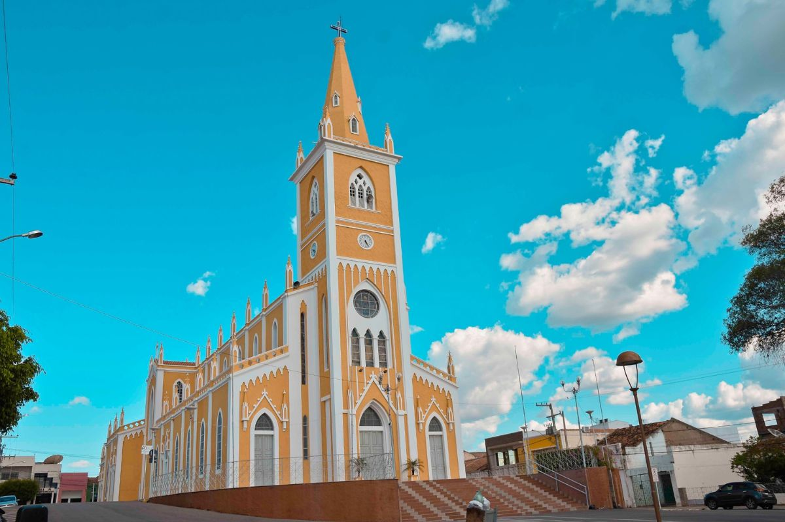

🇧🇷 Português
A Igreja Matriz de Nossa Senhora da Penha é o coração religioso de Serra Talhada. Com sua arquitetura imponente, domina a praça central da cidade e serve como ponto de encontro para a comunidade.
Dedicada à padroeira da cidade, a igreja é palco das maiores celebrações religiosas da região, mantendo viva a tradição e a devoção do povo sertanejo.
🇺🇸 English
The Mother Church of Our Lady of Penha is the religious heart of Serra Talhada. With its imposing architecture, it dominates the city's central square and serves as a meeting point for the community.
Dedicated to the city's patron saint, the church hosts the region's largest religious celebrations, keeping alive the tradition and devotion of the backlands people.